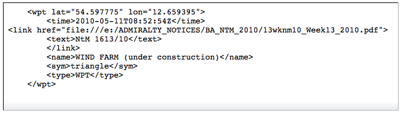

Rechts-Klick Menü
Das Rechts-Klick Menü ist überall verfügbar, solange der Cursor irgendwo im Kartenbereich ist. Der Inhalt dieses Menüs ist kontext-sensitiv. Arbeiten Sie z.B. mit Routen, enthält das Menü beim Rechts-Klick auf eine Routenlinie oder Wegpunkt mehr Einträge als beim Rechts-Klick sonstwo. Unten sind die Grundeinträge erklärt. Andere kontext-bezogene Einträge stehen bei den jeweiligen Funktionen.
Das grundlegende Rechts-Klick Menü bei Raster-Karten
Kontext-Menü ohne Quilting Kontext-Menü mit Quilting
Das Kontext-Menü unterscheidet sich leicht, je nachdem ob Quilting ein- oder abgeschaltet ist.
Meß-Werkzeug
Aktiviert einen "Bleistift". Bewegen Sie den Bleistift mit dem Cursor. Gehen Sie damit zu einer
Position, von der aus Sie messen wollen. Mit Links-Klick wird ein eingekreister Punkt erzeugt. Bewegen
Sie den Bleistift mit der Maus und sehen Sie die Distanz und Richtung von dem Punkt zur Bleistiftspitze
in "Echtzeit". Erneuter Links-Klick verschiebt den Startpunkt zum Messen. Rechts-Klick irgendwo schaltet
das Meß-Werkzeug über den Menü-Punkt "Mess-Werkzeug ausschalten" wieder ab (eventuell auch mit der "ESC"-Taste).
max. Vergrößerung hier
Zeigt den größsten Maßstab, die detaillierteste Karte, die an der Cursor-Position verfügbar ist.
Maßstab verkleinern
Zeigt den nächst kleineren Karten-Maßstab.
Maßstab vergrößern
Zeigt den nächst größeren Karten-Maßstab.
Neue Markierung
Setzt eine Markierung an der Cursor-Position. Weitere Erklärung unter Routen und Markierungen
Bootsposition hierhin verschieben (nicht in Bildern oben gezeigt)
Bewegt die eigene Bootsposition zu der Stelle des Cursors. Geht nur, wenn GPS nicht verbunden ist.
Navigiere hierhin
Erzeugt eine sofortige Route vom eigenen Boot zu der angeklickten Position.
Weiteres zu Routen hier.
Ansicht zentrieren...
Aktiviert einen kleinen Dialog zur Eingabe von Länge und Breite. Mit "OK" zentriert sich die Anzeige an
dieser Position bei gleicher Skalierung. Der eingegebene Wert bleibt für eine Sitzung erhalten, ist aber
beim Neustart von OpenCPN gelöscht.
Kurs-Voraus Modus
Ändert die Kartenausrichtung (Nord-Richtung) auf die augenblicklichen Kursrichtung.
Liste AIS-Ziele...
ist keine Grundfunktion, aber hier angezeigt, wenn ein AIS Port da ist.
Mehr darüber hier.
Karten-Gruppen
Sind Karten-Gruppen eingerichtet, kann hiermit eine oder alle Gruppen aktiviert werden.
Das grundlegende Rechts-Klick Menü bei Vektor-Karten
Kontext-Menü ohne Quilting Kontext-Menü mit Quilting
Im Unterschied zu Raster-Karten gibt es hier einige weitere Einträge.
Objekt-Eigenschaften anzeigen
Jeder Punkt auf einer Vektor-Karte hat bestimmte Attribute oder Informationen. Das reicht von nur der
Tiefe mitten auf dem Ozean bis zu sehr viel mehr. Hier ist ein Beispiel von einer Lateral-Boje.
Mit dem Scrollbalken lesen Sie weiteren Text in dem Informationsfenster. Mehr darüber auch unter Vektor Karten Anzeige.
CM93 Offset Dialog
Öffnet das Dialogfenster zur Änderung der Karten-Offsets.
Dieser folgende Einschub beschreibt noch den Stand der OpenCPN Version 2.5.0. Siehe auch unter Layer.
Diese Funktionsweise ist auch noch
weiterhin ab Version 3.2 nutzbar, wurde aber ab 3.2 verbessert. Siehe unter Erweiterte Markierungen ab Version 3.2.
Durch andere Anwender im Cruisersforum aufmerksam gemacht, wurde ein weiteres Feature für Wegpunkte bzw. Markierungen gefunden, das bisher nicht dokumentiert ist. Leider ist es bisher nicht vollständig implementiert, es fehlt eine entsprechende Edit-Funktion für Wegpunkte/Markierungen. Ändert man jedoch von Hand die XML Daten durch Hinzufügen von Links zu externen Dokumenten, erscheint ein Eintrag "Zusätzliche Informationen" im Rechts-Klick Menü bei Klick auf den Wegpunkt/Markierung und öffnet ein Fenster, in dem die Verknüpfung zum externen Dokument steht, das so geöffnet werden kann:
In diesem Fall sieht der Wegpunkt/die Markierung der GPX Datei so aus:

Es wurde also ein Link zu einer PDF Datei mit den Nachrichten für Seefahrer eingebettet, die sich auf der lokalen Festplatte befindet und bei Klick auf den Link im Fenster Markierungs-Information öffnet. Das kann bei Bedarf auch eine Bilddatei sein mit z.B. einer Hafenansicht. Damit eröffnen sich Möglichkeiten, OpenCPN an höherwertige Programme heranzuführen, wenn noch eine einfache Editier-Funktion für Wegpunkte/Markierungen (GPX Bearbeitung) vorhanden wäre.
Eine weitere interessante Anwendung hierfür wäre die Nutzung der COGOW Daten, wie im folgenden Bild ansatzweise gezeigt.
Wenig bekannt ist, daß die COGOW Daten bessere Informationen liefern als die sog. Pilot-Charts.